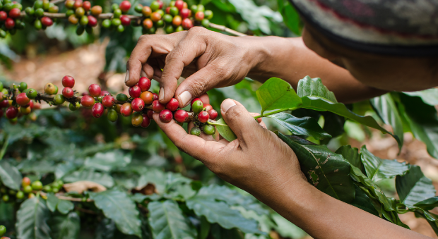
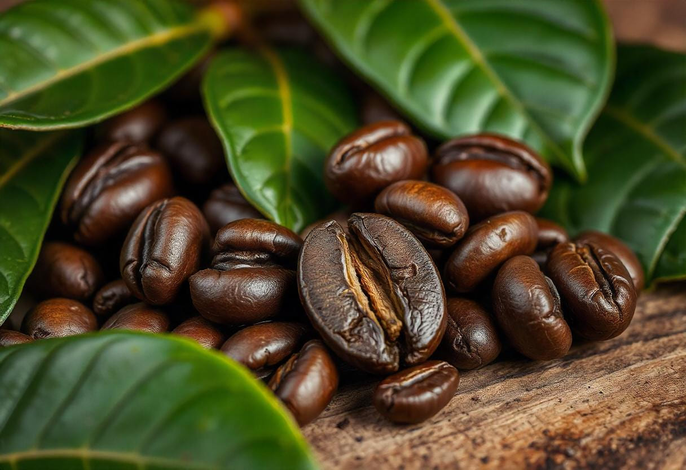

Geografía es Sabor
Viajamos para encontrar lo extraordinario.
África
Etiopía
El lugar de nacimiento del café. Aquí las variedades crecen casi de forma silvestre. Buscamos perfiles florales y cítricos que recuerdan al té y al jazmín.
Perfil: Floral, Cítrico, Té Negro.
Altitud: 2.000 msnm.
Altitud: 2.000 msnm.


Sudamérica
Colombia
Trabajamos en micro-lotes de Huila. El suelo volcánico aporta una dulzura increíble y un balance perfecto.
Perfil: Caramelo, Frutos Rojos, Cuerpo Medio.
Altitud: 1.600 msnm.
Altitud: 1.600 msnm.
Asia
Sumatra
Intenso y terroso. El clima húmedo de Indonesia crea cafés con mucho cuerpo y baja acidez, perfectos para quienes buscan fuerza y notas a madera.
Perfil: Especias, Madera, Chocolate Negro.
Altitud: 1.300 msnm.
Altitud: 1.300 msnm.
